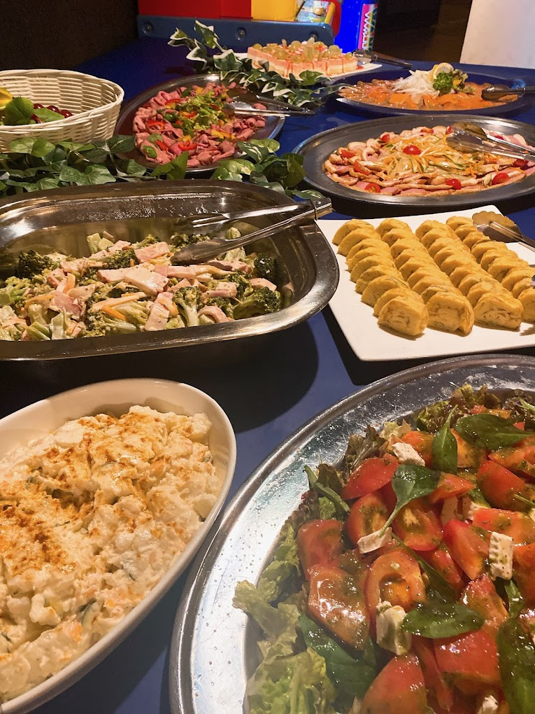
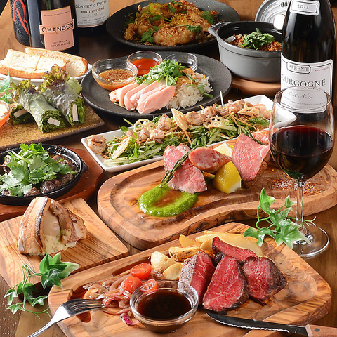

グルメ情報（検索結果は2件）
検索結果1件目

- 名前: バグダッドカフェ Bagdadcafe/モータウン MOTOWN
- アクセス: 京王八王子駅を背にし右手に見えるローソンの隣のビル、ホテルザ・ビーの2階です。
- 住所: 東京都八王子市明神町４-6-12 ホテル・ザ・ビー八王子（旧八王子プラザホテル）2F
- 予算: 3001～4000円
- キャッチコピー: 【サプライズ演出有】 結婚パーティー受付中
- ジャンル: 居酒屋
- 営業時間: 月～日、祝日、祝前日: 17:00～21:00 （料理L.O. 20:00 ドリンクL.O. 20:00）
- 最寄駅: 京王八王子
- サブジャンル: ダイニングバー・バル
検索結果2件目

- 名前: 隠れ家バル Funny&Bouquet
- アクセス: ＪＲ八王子駅北口徒歩1分/京王八王子駅徒歩3分
- 住所: 東京都八王子市東町12-14
- 予算: 2001～3000円
- キャッチコピー: 2.5時間飲み放題付2000円~ 【★少人数様ソファー★】
- ジャンル: 居酒屋
- 営業時間: 月～日、祝日、祝前日: 17:00～翌5:00 （料理L.O. 翌3:00 ドリンクL.O. 翌4:00）
- 最寄駅: 八王子
- サブジャンル: ダイニングバー・バル